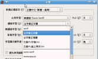

COSA活動記錄簿
留下COSA所辦活動之紀錄
首頁
相簿目錄
::
最新上傳
::
最新留言
::
熱門圖片
::
最高評分
熱門圖片
98 次觀看
98 次觀看
98 次觀看
98 次觀看

98 次觀看
97 次觀看
97 次觀看
97 次觀看
97 次觀看
97 次觀看
97 次觀看
97 次觀看
752 張圖片，共 63 頁
1
35
36
37
38
39
40
41
42
43
44
63


.jpg "檔案名稱=1 (16).jpg
檔案大小=44KB
圖片尺寸=450x600
加入日期=四月 24, 2007")
.jpg "檔案名稱=1 (2).jpg
檔案大小=61KB
圖片尺寸=800x600
加入日期=四月 24, 2007")
.jpg "檔案名稱=1 (30).jpg
檔案大小=72KB
圖片尺寸=800x600
加入日期=四月 24, 2007")
.jpg "檔案名稱=1 (6).jpg
檔案大小=61KB
圖片尺寸=800x600
加入日期=四月 24, 2007")